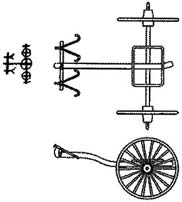

GRAMMAR COMMENTARY
10.1. Units of Counting
A specific class of words with exclusively nominal functions in ancient Chinese is the group of units of counting, which includes two categories.
The first category of units of counting is used to name measures of volume or collections of small objects. This includes, for example, words such as 卣 yǒu "jug"—a measure of liquid (鬯六卣 chàng liù yǒu "six jugs of wine"); 朋 péng "bundle"—a unit of counting cowrie shells, widely used by the Yin as ornaments (貝二朋 bèi èr péng "two bundles of shells").
The second category of units of counting is used to count individual objects. In archaic Old Chinese, such units of counting coincide with the names used to designate the objects themselves: 人 rén when counting people (人十人 rén shí rén "ten people"), 羊 yáng when counting sheep (羊百羊 yáng bái yáng "one hundred sheep"), etc.
A numeral with a unit of counting always follows a name. In cases where a numeral acts as an attribute of a name and therefore precedes it, units of counting are not used.
10.2. Chain of Definitions
A definition of a name preceding it may in turn have a definition. This is how chains of definitions arise: 我西鄙田 wǒ xī bǐ tián "fields of our western outskirts" (cf. 我東鄙 wǒ dōng bǐ "our eastern outskirts").
10.3. Preposition 迄 qì
To denote the end point of movement in space or time, in archaic Old Chinese, along with 于 yú, the preposition 迄 qì (sometimes in the combination 迄至 qì zhì) is also used:
迄至九日辛卯允雨 qì zhì jiǔ rì xīn mǎo yǔn yǔ "On the ninth day of Xin Mao, it really did rain."
10.4. Adverbial Noun 昔 xī
In addition to 今 jīn, 昔 xī also belongs to the group of adverbial nouns in the archaic language. These two words are related by the binary opposition "near" versus "far." While 今 jīn can be translated into English as "now," "currently," or "at the present moment," 昔 xī means "earlier," "once," or "in the past."
Accordingly, in texts, 昔 xī appears as an object, denoting the time of an action:
昔祖丁不黍 xī zǔ dīng bù shǔ "Earlier, Ancestor Ding did not sow millet."
This word can also serve as an adjective for a name:
昔丁丑 xī dīng chǒu "last day of Ding-chow."
10.5. Place Predicatives 若茲 ruò zī and 若偁 ruò chēng
We have already encountered a large number of function words that replace names and are therefore called pronouns.
However, in ancient Chinese there are also words that replace predicatives. They can be called place predicates.
Place predicates of the archaic language are represented by phrases consisting of the predicate 若 ruò "to be similar" and demonstrative pronouns.
The most frequently used place predicate is 若茲 ruò zī "to be like this":
日若茲晦 rì ruò zī huǐ "The sun has become so dark."
若茲不雨 ruò zī bù yǔ "There has been no rain for so long."
This place predicate can also function as a predicate.
Apparently, the paired phrase for this place predicate is 若偁 ruò chēng.
10.6. Complex Sentences in Archaic Language
So far, we've dealt exclusively with simple sentences. This is because the relationships between the components of complex sentences in archaic languages are usually not formally expressed. The nature of the connection between simple sentences in a complex sentence can be determined by the meaning:
王占曰丁丑有設, 不吉, 其唯甲有設, 吉, 其唯辛有設, 亦不吉 wáng zhān yuē dīng chǒu yǒu shè, bù jí, qí wéi jiǎ yǒu shè, jí, qí wéi xīn yǒu shè, yì bù jí "The ruler read the answer on the fortunetelling bone: "On the day of ding-chou there will be an omen, it is unfortunate; [if] the omen is on the day of jia, [then] it is fortunate; [If] on a xin day, [then] it is also to misfortune.”
Apparently, the connection between the sentences in the last part of the text of lesson 10 should be considered in the same context:
王占曰不嘉, 其嘉, 不吉 wáng zhān yuē bù jiā, qí jiā, bù jí “The ruler read the answer: ‘It will not come true. [And if it does] come true, then it is to misfortune’.”
Perhaps the only grammatical indicator of the connection between sentences in a complex sentence is the function word 乃 nǎi (迺 nǎi) in the archaic language. It indicates a temporal or causal relationship in a sequence of events:
若茲乃死 ruò zī, nǎi sǐ "It will be so, and [she] will die."
If 乃 nǎi is at the beginning of a statement, it indicates that another clause, already known from the context, has been omitted:
乃若茲有祟若偁 nǎi ruò zī yǒu suì ruò chēng "And in this also there will be harm, as in that."
LEXICAL COMMENTARY
10.A. Yin Chariots
Until the 5th–4th centuries BC, horses were used by the ancient Chinese exclusively as draft animals, pulling war chariots. Chariots were the primary striking force of the time; it is no coincidence that in later times, the power of a state was measured by the number of war chariots. The Yin also widely used chariots for hunting.
The main structural components of a chariot were the body, axle, two wheels, a drawbar, and a crossbar with slingshot-shaped yokes, which served as clamps. The most vulnerable part of the chariot was the drawbar, which was easily broken.



On the left is a Yin chariot found during excavations;
In the center is its reconstruction;
on the right is the ancient inscription of the character 車 chē